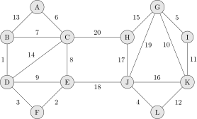
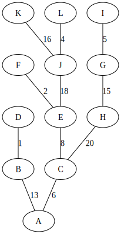
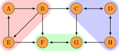

Dette dokumentet inneholder en gjennomgang av noen sentrale grafalgoritmer, og hvordan de kan implementeres i Python. Det kan brukes som et løsningsforslag for det som alltid er en god ukesoppgave: implementer algoritmene som gjennomgås.
La oss ta utgangspunkt i følgende graf.

Den er urettet og vektet. Den kan skrives ned ved å liste alle kantene sammen med vektene.
A B 13 A C 6 B C 7 B D 1 C D 14 C E 8 C H 20 D E 9 D F 3 E F 2 E J 18 G H 15 G I 5 G J 19 G K 10 H J 17 I K 11 J K 16 J L 4 K L 12
Merk at denne måten å skrive ned grafen fungerer fordi alle noder har minst én kant i eksempelgrafen. Dersom vi hadde hatt noder som ikke hadde noen naboer måtte vi ha listet alle nodene også.
Bygg grafen
Vi kan skrive en prosedyre som leser linjene og returnerer en graf \(G = (V, E)\), der \(w\) er en vektfunksjon fra \(V \times V \to \mathbb{N}\).
Kodeblokkene er skjult, men vises når du trykker på dem; det er ment som en oppfordring til å prøve å løse problemet selv først!
Trykk her dersom du vil vise alle kodeblokkene.
from collections import defaultdict def buildgraph(lines): V = set() E = defaultdict(set) w = dict() for line in lines.splitlines(): u, v, weight = line.strip().split() V.add(u) V.add(v) E[u].add(v) E[v].add(u) w[(u, v)] = int(weight) w[(v, u)] = int(weight) return V, E, w
Vi antar at linjene er gitt som en enkel streng. Siden grafen er urettet
representerer vi hver kant i begge retninger. For kantene \(E\) bruker vi en
defaultdict slik at alle noder vi implisitt er assosiert med en tom mengde;
med en vanlig dict kunne vi for eksempel initialisert en tom mengde for
alle nodene først. Nå kan vi lese inn grafen, og antar at grafen er gitt i en
variabel lines.
G = buildgraph(lines)
Tegn grafen
Nå som vi har en måte å bygge grafen, kan det være kjekt å ha en måte å vise grafen. Den enkleste måten jeg vet om er å bruke Python sitt bibliotek for Graphviz. Dette er ikke viktig stoff for IN2010, men verktøy som dette gjør det enklere å oppdage feil i egen kode.
import graphviz def drawgraph(G): V, E, w = G dot = graphviz.Graph() seen_edges = set() for u in V: dot.node(u) for v in E[u]: if (v, u) in seen_edges: continue seen_edges.add((u, v)) dot.edge(u, v, label=str(w[(u, v)])) dot.render('graph', format='svg') drawgraph(G)
Merk at den grafen vi ser her er den samme grafen som den på toppen av siden (men den er ikke tegnet like pent).
Traverser grafen
Nå som vi har representert grafen, så kan vi traversere den. Det vil si at vi systematisk går gjennom alle nodene i grafen.
Grafen vi jobber med er sammenhengende. Det betyr at det finnes en sti mellom alle par av noder i \(V\). Når en graf er sammenhengende, så er det tilstrekkelig å starte med en vilkårlig node \(u \in V\), og besøke \(u\) sine naboer, og deres naboer sine naboer, og så videre, og da vil vi til slutt ha besøkt alle noder i \(V\).
Det finnes to svært naturlige måter å utføre en slik traversering. Begge går ut på å starte i en node, notere ned nodens naboer, besøke dem, notere ned deres naboer også, og fortsette slik. I tillegg må vi holde styr på hvilke noder som er besøkt, slik at vi ikke besøker noder flere ganger, og dermed risikere at traverseringen aldri terminerer. Distinksjonen mellom de to naturlige måtene å traversere grafen på er i valg av datastruktur når vi skal notere ned hvilke noder som er i «besøkslista». De enkleste (og dermed mest naturlige) er enten å:
- gå så dypt som mulig inn i grafen som mulig, det vil si at du følger (ikke-besøkte) naboer så langt du kan;
- besøke alle direkte naboer før du besøker naboer sine naboer.
Den første strategien kalles dybde-først søk (DFS) (eng: depth-first search), og den andre kalles bredde først søk (BFS) (eng: breath-first search). Det mest vesentlige skillet mellom de to strategiene at et dybde-først søk anvender en stack og et bredde-først søk anvender en kø.
Dybde-først søk
DFS fra en gitt node \(s\) kan implementeres rekursivt på følgende måte:
def dfs_rec(G, s, visited, result): _, E, _ = G result.append(s) visited.add(s) for v in E[s]: if v not in visited: dfs_rec(G, v, visited, result) return result
Merk at vi her gir med to ekstra argumenter; et for å holde styr på hvilke
noder som er besøkt; og et for å lagre rekkefølgen nodene blir besøkt i. Nå
kan vi for eksempel kalle på dfs_rec fra noden \(A\):
dfs_rec(G, 'A', set(), [])
| A | C | E | J | G | H | K | L | I | D | B | F |
Vi kan også gjøre et DFS-søk ved å bruke en eksplisitt stack. Merk at rekursive kall legges på det som kalles en «call stack»; altså bytter vi egentlig ut en stack med en annen!
def dfs(G, s): _, E, _ = G visited = set() stack = [s] result = [] while stack: u = stack.pop() if u not in visited: result.append(u) visited.add(u) for v in E[u]: stack.append(v) return result
dfs(G, 'A')
| A | B | D | F | E | C | H | J | K | I | G | L |
Bredde-først søk
Ved å bruke en kø (altså en liste med «first-in-first-out» snarere enn en «last-in-first-out»), i stedet for en stack, så får vi et bredde-først søk.
from collections import deque def bfs(G, s): _, E, _ = G visited = set([s]) queue = deque([s]) result = [] while queue: u = queue.popleft() result.append(u) for v in E[u]: if v not in visited: visited.add(v) queue.append(v) return result
Her bruker vi en deque, som gir konstant tid for innsetting og sletting på
hver ende av køen. Vi setter inn på slutten, og tar ut elementene i
begynnelsen. Merk at vi kunne like gjerne gjort motsatt, og satt inn på
begynnelsen og tatt ut på slutten.
bfs(G, 'A')
| A | C | B | E | D | H | J | F | G | L | K | I |
Korteste stier
Når vi snakker om korteste stier er det som ofte snakk om vektede grafer. Men la oss for et øyeblikk tenke på hva det betyr for uvektede grafer. I eksempelgrafen ovenfor kan vi ganske enkelt ignorere vektene, og anse grafen å være uvektet. Den korteste stien mellom to noder i en uvektet graf, er stien som går mellom de to nodene med færrest kanter. Da får vi faktisk den korteste stien mellom to noder ved hjelp av et bredde-først søk, slik vi gjorde ovenfor.
Bredde-først søk (igjen)
Det som mangler fra det forrige bredde-først søket er en måte å hente ut de korteste stiene; det eneste vi «sparer på» under søket er rekkefølgen noder blir besøkt i. En enkel måte å lagre stiene, er for hver node vi legger på køen, også lagre hvilken node som la den på køen. Det kan gjøres slik:
def bfs_shortest_paths_from(G, s): _, E, _ = G parents = {s : None} queue = deque([s]) while queue: u = queue.popleft() for v in E[u]: if v not in parents: parents[v] = u queue.append(v) return parents
Her har vi kun byttet ut visited med parents, der parents er en ordbok som
assosierer hver node \(u\) til noden \(v\) som la \(u\) på køen. Vi kan avgjøre om
en node er besøkt før ved å sjekke om noden har en forelder.
Merk at denne mappingen av nodene utgjør et tre! Vi kan utforske den nærmere ved å tegne treet (igjen med bruk av graphviz).
def draw_parents(parents): dot = graphviz.Graph() for u in parents: v = parents[u] if v: dot.edge(v, u) dot.render('bfs_spanningtree', format='svg') draw_parents(bfs_shortest_paths_from(G, 'A'))
Fra dette treet kan man lese ut den korteste stien fra \(A\) til alle andre
noder. For å finne den korteste stien mellom to noder \(s\) og \(t\) er det
tilstrekkelig å kalle på bfs_shortest_paths_from(G, s), og følge parents fra
\(t\) til roten av treet som er \(s\). Et slikt tre, som inneholder de samme
nodene som en graf \(G\) kalles et spenntre for \(G\). Merk at dersom grafen
ikke er sammenhengende, så vil det ikke nødvendigvis finnes en sti fra \(s\)
til \(t\), hvor vi her for enkelhets skyld returnerer en tom liste.
def bfs_shortest_path_between(G, s, t): parents = bfs_shortest_paths_from(G, s) v = t path = [] if t not in parents: return path while v: path.append(v) v = parents[v] return path[::-1]
Merk at path[::-1] er en måte å reversere en liste i Python. Med denne
prosedyren definert kan vi finne korteste vei mellom for eksempel nodene \(A\)
og \(G\).
bfs_shortest_path_between(G, 'A', 'G')
| A | C | H | G |
Vi kan også finne korteste veien fra en node til alle andre noder.
def bfs_all_shortest_paths(G, s): V, _, _ = G parents = bfs_shortest_paths_from(G, s) paths = [] for v in V: path = [] while v: path.append(v) v = parents[v] paths.append(path[::-1]) return paths
Med denne prosedyren definert kan vi finne korteste vei mellom alle par av
noder. Vi kan kalle på prosedyren fra noden \(A\), og få ut de korteste stiene
fra \(A\) til alle andre noder. Merk at vi kaller på sorted kun for å gjøre
tabellen litt enklere å lese.
sorted(bfs_all_shortest_paths(G, 'A'))
| A | ||||
| A | B | |||
| A | C | |||
| A | C | D | ||
| A | C | E | ||
| A | C | E | F | |
| A | C | E | J | |
| A | C | E | J | K |
| A | C | E | J | L |
| A | C | H | ||
| A | C | H | G | |
| A | C | H | G | I |
Korteste stier for vektede grafer (Dijkstra)
La oss returnere til det mer interessante spørsmålet der vi har vekter på kantene. For en graf \(G = (V, E)\) med vektfunksjon \(w\), er den korteste stien mellom \(s \in V\) og \(t \in V\) er den stien \(v_1, v_2, \dots, v_n\) slik at \(v_1 = s\) og \(v_n = t\) som minimerer \(\sum_{i=1}^{n-1}w(v_i, v_{i+1})\). Det vil si at den totale vekten (eller kostnadden) av en sti er gitt av summene av vektene til kantene som utgjør stien.
Vi skal nå implementere Dijkstra sin algoritme for korteste vei fra en node til alle andre noder. Der DFS bruker en stack og BFS bruker en FIFO-kø, så bruker Dijkstra heller en prioritetskø. En prioritetskø trenger en total ordning over elementene som legges på køen, altså et sorteringskriterie. Tradisjonelt beskriver man Dijkstra ved å si at prioriteten til et element er gitt av en avstandsmatrise \(D\), slik at for en gitt \(v \in V\) så angir \(D[v]\) den korteste avstanden fra startnoden til \(v\) som er oppdaget så langt. Dersom \(v\) ikke er oppdaget enda har den avstand \(\infty\).
En utfordring med å implementere Dijkstra er et steg som kalles edge
relaxation. Hvis vi er ved en node \(u \in V\) som har en kant til en node \(v \in
V\) med vekt \(w(u, v)\), så er spørsmålet om vi har funnet en kortere vei til
\(v\) enn den som er funnet så langt. Den korteste veien til en node så langt
er gitt av \(D\), som vil si at det har kostet \(D[u]\) å komme til \(u\), og det
vil koste \(D[u] + w(u, v)\) å komme til \(v\) via \(u\). Dersom \(D[u] + w(u, v)\)
er mindre enn \(D[v]\), så må prioriteten til \(v\) erstattes. Steget kan
beskrives slik, der queue referer til prioritetskøen og dist refererer til
avstandsmatrisen \(D\):
c <- dist[u] + w(u, v) if c < dist[v]: dist[v] <- c DecreasePriority(queue, v, c)
Vanskeligheten med dette er at prioritetskøene vi har sett så langt (der binære heaps er den mest effektive) ikke har noen måte å oppdatere prioriteten for en gitt node.1 I Python har vi ikke tilgang på en prioritetskø som støtter å endre prioriteten til et element på logaritmisk tid, så derfor vil bruke en litt annen strategi, som ligger litt tettere opp mot bredde-først søk.
from heapq import heappush, heappop def dijkstra(G, s): V, E, w = G queue = [(0, s)] dist = defaultdict(lambda: float('inf')) dist[s] = 0 while queue: cost, u = heappop(queue) if cost != dist[u]: continue for v in E[u]: c = cost + w[(u, v)] if c < dist[v]: dist[v] = c heappush(queue, (c, v)) return dist
Vi definerer en kø som starter med å inneholde et par \((0, s)\), der \(0\) er
avstanden fra \(s\) til \(s\). I tillegg lager vi en avstandsmatrise, som her er
implementert som en defaultdict, slik at alle noder implisitt har en
avstand på float('inf'), som er det nærmeste vi kommer \(\infty\)
representert i Python, og setter avstanden til \(s\) lik \(0\).
Vi traverserer så grafen ved å plukke noder fra prioritetskøen. Hver node
\(u\) som tas av prioritetskøen har en assosiert kostnad. Når en node \(u\) er
tatt av køen, går vi gjennom hver kant fra \(u\) til en nabo \(v\). Dersom
kostnaden ved å gå til \(v\) via \(u\) er den laveste observert så langt, så
oppdateres avstanden til \(v\) i dist, og \(v\) legges på køen med den nye
kostnaden som prioritet.
Vi kan nå beregne avstanden til alle noder fra \(A\). Python-magien her kan fint ignoreres, og er der kun for å få en finere utskrift.
dist = dijkstra(G, 'A') list(zip(*sorted(dist.items())))
| A | B | C | D | E | F | G | H | I | J | K | L |
| 0 | 13 | 6 | 14 | 14 | 16 | 41 | 26 | 46 | 32 | 48 | 36 |
Et spørsmål man bør stille seg, er om denne implementasjonen av Dijkstra har samme kjøretidskompleksitet som forventet av Dijkstra, altså \(O(|E| \cdot \log(|V|))\). Intuitivt betyr det at vi har tid til å gå gjennom alle kantene i grafen og for hver av disse gjøre en \(O(\log(|V|))\) operasjon, slik som innsetting og sletting i en binær heap. I denne implementasjonen risikeres det å legge samme node på heapen flere ganger! Da blir spørsmålet, hvor mange elementer kan legges på heapen totalt? I verste tilfelle, så kan en node legges til på køen av alle sine naboer (altså like mange ganger som det finnes kanter som går til noden). Det vil si at vi i verste tilfellet vil legge like mange elementer på heapen som antallet kanter i grafen, altså \(|E|\). Dermed ser det ut som at vi får \(O(|E| \cdot log(|E|))\) i kjøretid, som virker mindre effektivt siden kan finnes mange flere kanter enn noder i en graf. Denne intuisjonen stemmer ikke helt, og det bunner i at \(\log(x^2) \leq 2 \cdot \log(x)\) for alle \(0 < x\). Antall kanter i grafen kan ikke være mer enn kvadratisk med hensyn til antall noder,2 altså er \(O(|E| \cdot log(|E|)) = O(|E| \cdot log(|V|))\), og dermed har denne implementasjonen samme kjøretidskompleksitet som en mer tradisjonell implementasjon av Dijkstra.
På samme måte som med bredde-først søk kan de konkrete stiene hentes ut ved å for hver node \(v\) lagre hvilken node \(u\) som la \(v\) på prioritetskøen.
def shortest_paths_from(G, s): V, E, w = G queue = [(0, s)] dist = defaultdict(lambda: float('inf')) parents = {s : None} dist[s] = 0 while queue: cost, u = heappop(queue) if cost != dist[u]: continue for v in E[u]: c = cost + w[(u, v)] if c < dist[v]: dist[v] = c heappush(queue, (c, v)) parents[v] = u return parents
Vi kan nå se på treet vi får fra å kjøre Dijkstra, og fra det kan vi lese ut de korteste stiene fra \(A\) til alle andre noder.
def draw_parents_weighted(G, parents, name): V, _, w = G dot = graphviz.Graph() for u in parents: v = parents[u] if v: dot.edge(u, v, label=str(w[(u, v)])) dot.render(name, format='svg') draw_parents_weighted(G, shortest_paths_from(G, 'A'), 'dijkstra_spanningtree')

Minimale spenntrær
Vi har nå såvidt vært innom spenntrær. Ordet er veldig beskrivende: vi ønsker et tre som spenner en graf \(G = (V, E)\), altså at et tre som kobler alle nodene i \(V\) og kun bruker kanter fra \(E\). Nå skal vi se på hvordan vi kan finne et minimalt spenntre, altså et tre som spenner grafen slik at den totale vekten av kantene er minimert. Vi skal kun løse dette problemet for urettede og vektede grafer (i motsetning fra BFS, DFS og Dijkstra, som fungerer like godt på rettede grafer) som vi antar er sammenhengende.
Prims algoritme
På forelesning dekker vi tre algoritmer for minimale spenntrær. Her kommer vi kun til å se på Prims algoritme. Den har store likhetstrekk til Dijkstra.
def prim(G): V, E, w = G # Pick arbitrary start vertex s = next(iter(V)) queue = [(0, s, None)] parents = dict() while queue: _, u, p = heappop(queue) if u in parents: continue parents[u] = p for v in E[u]: heappush(queue, (w[(u, v)], v, u)) return parents
Vi definerer en kø som starter med å inneholde et trippel, der \(s\) er en
vilkårlig node, \(0\) er den assosierte vekten, og None representerer
fraværet av en node som la \(s\) på prioritetskøen. I tillegg har vi et map
parents for å holde på foreldre-pekere. Som vi har sett tidligere, så kan
vi bruke et slikt map for å representere et spenntre etter en traversering.
Vi traverserer så grafen ved å ta ut noder fra prioritetskøen. Her
prioriterer vi nodene etter vekten på kanten, snarere enn den akkumulerte
vekten av stien så langt (som vi gjorde for Dijkstra). For hver node \(u\) vi
tar av prioritetskøen har vi en assosiert kostnad og en node \(p\) som la \(u\)
på heapen. Når en node \(u\) er tatt av køen legger vi det til i parents
dersom \(u\) ikke forekommer i parents fra før. På denne måten velger vi
alltid den kanten med lavest vekt som er observert fra en node så langt. Ved
å alltid velge den kanten med lavest vekt, så er vi også garantert å få det
treet med lavest total vekt. Dette er et eksempel på en grådig algoritme.
draw_parents_weighted(G, prim(G), 'prim_minimal_spanningtree')
\(2\)-sammenhengenhet
Grafen som vi jobber med er sammenhengende. Det finnes altså en sti mellom alle par av noder i \(G\). I mange anvendelser så ønsker man ikke bare at grafen skal være sammenhengende, men også at den skal være \(2\)-sammenhengende (også kalt bikonnektiv). Det betyr at hvis en hvilken som helst node \(v \in V\) fjernes fra grafen, så vil grafen fremdeles være sammenhengende. Mer generelt sier vi at en graf er \(k\)-sammenhengende, så hvis grafen forblir sammenhengende hvis man fjerner færre enn \(k\) noder.
Dette er et nyttig begrep i anvendelser der det er et ønske om redundans. For eksempel kan du se for deg en graf som representerer Ruter sitt kollektivnett, der noder representerer holdeplasser, og kanter representerer at det går en buss, trikk eller bane mellom holdeplassene. Dersom denne grafen er \(2\)-sammenhengende, så betyr det at dersom det er full stans ved en holdeplass, så vil reisende fremdeles kunne komme frem til sitt stoppested gjennom en annen rute.
Er \(G\) er \(2\)-sammenhengende?
La oss sjekke om \(G\) er \(2\)-sammenhengende ved å følge definisjonen veldig direkte. Med andre ord prøver vi å fjerne hver node \(v \in V\) fra \(G\) og sjekke om den resulterende grafen er sammenhengende. Siden grafen er liten, så er det lurt å sjekke om den er \(2\)-sammenhengende «for hånd» før du går videre.
Først trenger vi en hjelpeprosedyre for å fjerne en node. Merk at vi vil unngå å «ødelegge» den opprinnelige grafen \(G\), må vi passe på å jobbe på kopier av \(V\) og \(E\). Siden vi ikke vil bruke vektene her, så lar vi \(w\) forbli uendret (selv om dette er litt stygt).
def removenode(G, u): V, E, w = G newV = V.copy() newE = E.copy() newV.discard(u) del newE[u] for v in newV: neighbors = newE[v].copy() neighbors.discard(u) newE[v] = neighbors return newV, newE, w
Vi har allerede implementert et dybde-først søk, så vi kan gjenbruke det her. Søket forteller oss hvilke noder som kan nås fra en gitt startnode. Siden vi lurer på om alle noder kan nå alle andre, så kan vi starte fra en hvilken som helst node \(v \in V\).
def isbiconnected_naive(G): V, E, _ = G for v in V: newV, _, _ = newG = removenode(G, v) nodelist = dfs(newG, next(iter(newV))) if set(nodelist) != newV: return False return True
Så, er \(G\) \(2\)-sammenhengende?
isbiconnected_naive(G)
True
Ja, \(G\) er \(2\)-sammenhengende. Men er \(G\) \(3\)-sammenhengende? Prosedyren
vår kan kun sjekke om grafen er \(2\)-sammenhengende, men vi kan sjekke
dette ved hjelp av removenode og isbiconnected_naive.
isbiconnected_naive(removenode(G, 'C'))
False
Ved å først fjerne en velvalgt node C, så kan vi se at grafen ikke lenger er
\(2\)-sammenhengende, som vil si at grafen \(G\) er \(2\)-sammenhengende, men
ikke \(3\)-sammenhengende.
For hver node \(v \in V\), bygger isbiconnected_naive en ny graf \(G'\) med \(v\)
(og tilhørende kanter) er fjernet, og gjør et DFS-søk. DFS-søk har som kjent
\(O(|V| + |E|)\) kjøretid, og det samme har removenode, siden grafen
essensielt kopieres. Dette gjøres for hver node \(v \in V\), som gir oss
\(O(|V|\cdot(|V| + |E|))\) i kjøretid.
Separasjonsnoder og bikonnektivitet
Dette problemet kan løses mye mer effektivt enn isbiconnected_naive. Når en
algoritme følger definisjonen så direkte, pleier vi å si at algoritmen er
brute force. Nå skal vi se en algoritme som er i \(O(|V| + |E|)\), altså
lineær tid med hensyn til størrelsen på grafen. Den gjør et dybde-først søk,
og lagrer litt ekstra informasjon på veien som lar oss avgjøre hvorvidt
grafen er \(2\)-sammenhengende eller ikke. Algoritmen går ut på å
identifisere det som kalles separasjonsnoder.
En separasjonsnode er intuitivt en node som holder grafen sammenhengende. Hvis en separasjonsnode fjernes, så får grafen flere komponenter (altså at den ikke lenger sammenhengende). Dersom alle stier mellom to noder går gjennom den samme noden \(v \in V\), så er \(v\) en separasjonsnode.
Når vi gjør et dybde-først søk får vi også et spenntre (akkurat slik vi har sett for andre traverseringsmetoder). Vi sier at hvis \(T\) er et spenntre for \(G\) og \(u \in V\) er en forfeder av \(v \in V\) i treet, så kalles en kant fra \(v\) til \(u\) en tilbakekant (eng: back-edge). Dersom vi har en tilbakekant \((v, u)\) som ikke er i treet, så vet vi at det finnes minst to distinkte stier mellom \(u\) og \(v\).
Det er to egenskaper vi kan sjekke ved et slikt spenntre som sammen forteller oss om en node i den underliggende grafen er en separasjonsnode:
- Hvis rotnoden \(r \in V\) i spenntreet har mer enn ett barn, så er roten \(r\) i treet en separasjonsnode i \(G\).
- Hvis \(u \in V\) ikke er en rotnoden og det ikke finnes en etterfølger \(v\) av \(u\) (der \(u \neq v\)) med en tilbakekant fra \(v\) til en forfeder av \(u\), så er \(u\) en separasjonsnode i \(G\).
Det første punktet er ganske enkelt å avgjøre: vi kan for eksempel velge en vilkårlig node \(s\), og starte søket fra en vilkårlig nabo av \(s\). Dersom det finnes naboer av \(s\) som ikke er besøkt etter søket, så er roten en separasjonsnode.
For å sjekke det andre punktet vil algoritmen for å finne separasjonsnoder
holde styr på to tall for hver node \(u \in V\) som sammen lar oss identifisere
alle separasjonsnoder i grafen. Det ene tallet depth[u] forteller oss hvor
langt unna \(u\) er fra roten i spenntreet. Det andre tallet low[u] angir den
laveste dybden som kan nås ved å følge én eller flere etterkommere av \(u\) og
maksimalt en tilbakekant. Dersom depth[u] <= low[v] der \(u\) er en node og
\(v\) er et barn av \(u\), så er \(u\) en separasjonsnode.
def separationnodes_rec(E, u, d, depth, low, parent, seps): depth[u] = low[u] = d for v in E[u]: if v in parent and parent[v] == u: continue if v in depth: low[u] = min(low[u], depth[v]) continue parent[v] = u separationnodes_rec(E, v, d + 1, depth, low, parent, seps) low[u] = min(low[u], low[v]) if d <= low[v]: seps.add(u) def separationnodes(G): V, E, _ = G s = next(iter(V)) depth = {s: 0} low = {s: 0} parent = {s: None} seps = set() for u in E[s]: if u not in depth: parent[u] = s separationnodes_rec(E, u, 1, depth, low, parent, seps) if len([u for u in E[s] if depth[u] == 1]) > 1: seps.add(s) return seps
Her splitter arbeidet opp i to prosedyrer. Det er to grunner til dette:
- Siden algoritmen er avhengig av flere datastrukturer (som vi tilgjengeliggjør som argumenter, til fordel for globale variabler), så kan vi initialisere disse i en egen prosedyre, og la den rekursive prosedyren, som står for mesteparten av «arbeidet», ta disse som argumenter.
- Rotnoden i spenntreet (altså startnoden i søket) behandles forskjellig fra andre noder. Ved å skille prosedyren i to, kan vi slippe å behandle spesialtilfeller for roten i den rekursive prosedyren, og heller ta høyde for disse i prosedyren som kalles.
Vi kan kalle på prosedyren med \(G\) som argument. Siden \(G\) er \(2\)-sammenhengende bør vi heller ikke få noen separasjonsnoder.
separationnodes(G)
set()
Det får vi heller ikke. Men hvis vi forsøker å fjerne noden C, hvilke
noder blir da separasjonsnoder?
sorted(separationnodes(removenode(G, 'C')))
| B | D | E | J |
Med en algoritme for å finne separasjonsnoder i \(O(|V| + |E|)\) på plass er det enkelt å skrive en prosedyre som sjekker om en graf er \(2\)-sammenhengende med samme kjøretidskompleksitet.
def isbiconnected(G): return len(separationnodes(G)) == 0
Denne kan kalles på samme måte som isbiconnected_naive, men har betydelig
mye bedre kjøretidskompleksitet.
isbiconnected(G)
True
isbiconnected(removenode(G, 'C'))
False
Sterkt sammenhengende komponenter

For å snakke om sterkt sammenhengende komponenter må vi gjøre det i konteksten av rettede grafer. I en sterkt sammenhengende komponent må alle noder ha en sti til alle andre noder i samme sterkt sammenhengende komponent. I tillegg må en sterkt sammenhengende komponent være maksimal, altså snakker vi om den største mulige sterkt sammenhengende komponenten.
En viktig innsikt er at de sterkt sammenhengende komponentene av en graf \(G\) består av de samme nodene som i den reverserte grafen \(G_r\). Den reverserte grafen består av de samme nodene, men der alle kanter er snudd. Altså for hver kant \((u, v) \in E\) erstattes med kanten \((v, u)\).
Grafen vi ser på bildet ovenfor er en rettet graf som består av tre sterkt sammenhengende komponenter. Grafen kan skrives ned slik:
A B B C B E B F C D C G D C D H E A E F F G G F H D H G
La oss nå bygge denne grafen, men her ta høyde for at vi jobber med en graf som er rettet og uvektet.
def builddigraph(lines): V = set() E = defaultdict(set) for line in lines.splitlines(): v, u = line.strip().split() V.add(v) V.add(u) E[v].add(u) return V, E
La oss nå erstatte \(G\) med denne nye grafen. Igjen antar vi at beskrivelsen
ovenfor er gitt i en variabel lines.
G = builddigraph(lines)
Og la oss tegne denne nye grafen, i likhet med den forrige.
def drawdigraph(G, name): V, E = G dot = graphviz.Digraph() for u in V: dot.node(u) for v in E[u]: dot.edge(u, v) dot.render(name, format='svg') drawdigraph(G, 'digraph')
Vi kommer til å få bruk for den reverserte grafen, så la oss skrive en hjelpeprosedyre for dette.
def reversegraph(G): V, E = G rE = defaultdict(set) for u in V: for v in E[u]: rE[v].add(u) return V, rE
La oss sjekke om resultatet ser rimelig ut ved å tegne den.
drawdigraph(reversegraph(G), 'digraph_r')

Det er lurt å sjekke de to grafene, og forsikre seg selv om at de sterkt sammenhengende komponentene er de samme.
DFS og topologisk sortering
Vi har allerede sett en algoritme for topologisk sortering. Men nå som vi er nærmere kjent med dybde-først søk skal vi se at vi kan topologisk sortere noder kun ved hjelp av et dybde-først søk. Det er overraskende enkelt: gjør et dybde-først søk, der en node legges på en stack etter alle naboer er besøkt. Til slutt, vil den stacken være en topologisk sortering for grafen.
def dfsvisit(G, u, visited, stack): V, E = G visited.add(u) for v in E[u]: if v not in visited: dfsvisit(G, v, visited, stack) stack.append(u) def dfstopsort(G): V, E = G visited = set() stack = [] for u in V: if u not in visited: dfsvisit(G, u, visited, stack) return stack
Husk at topologisk sortering kun fungerer på asykliske grafer. Vi har ikke en slik for hånden, så vi etterlater å teste denne prosedyren som en oppgave til leseren.
Kosarajus algoritme
Algoritmen vi skal se på for sterkt sammenhengende komponenter er utrolig elegant, og bygger et par viktige innsikter. Den første har vi allerede etablert: de sterkt sammenhengende komponentene til en graf \(G\) er de samme som de sterkt sammenhengende komponentene til den reverserte grafen \(G_r\). Intuitivt kan vi tenke på en sterkt sammenhengende komponent som en sykel.
En annen innsikt er at hvis vi ønsker å finne den sterkt sammenhengende komponenten for en node \(v \in V\), så er det tilstrekkelig å finne nodene som kan nås fra \(v\) i \(G\) (for eksempel ved et dybde-først søk), og finne nodene som kan nås fra \(v\) i den reverserte grafen \(G_r\). Nodene som kan nås fra \(v\) i både \(G\) og \(G_r\) utgjør den sterkt sammenhengende komponenten til \(v\). Vi kunne gjort dette for hver node \(v \in V\), og funnet de sterkt sammenhengende komponentene i \(O(|V|\cdot(|V| + |E|))\), men igjen vil vi finne en mer effektiv algoritme.
Hvis vi anser hver sterkt sammenhengende komponent som en enkelt node (altså at vi anser det røde, grønne og lilla områdene i grafen ovenfor som noder), så får vi det vi kaller komponentgrafen. Denne grafen er garantert å ikke inneholde noen sykel, altså er komponentgrafen garantert å være asyklisk. Dersom to komponenter var en del av samme sykel, så kunne alle nodene i de to komponentene hatt en sti til hverandre; dette er en motsigelse, fordi hvis alle nodene fra to komponenter kan nå hverandre, så er de også nødt til å være i samme sterkt sammenhengende komponent.
La oss anta at vi har den underliggende komponentgrafen. Merk at dette faller på sin egen urimelighet, fordi det er jo den vi ønsker å finne, men gå med på antagelsen inntil videre. Hvis vi gjør en topologisk sortering av komponentgrafen, så vet vi at den topologisk siste komponenten umulig kan ha en kant til noen andre komponenter. Den topologisk nest siste komponenten kan umulig ha en kant til andre komponenter enn den topologisk siste grafen, og så videre. Dette er den siste innsikten vi trenger for Kosaraju sin algoritme for sterkt sammenhengende komponenter.
Algoritmen kan i korte trekk beskrives slik:
- Gjør et (fullt) dybde-først søk i en graf \(G\), der hver node legges på en
stack etter alle naboer er besøkt (akkurat slik som
dfstopsort). - Konstruer den reverserte grafen \(G_r\)
- Gjør et nytt (fullt) dybde-først søk på \(G_r\), der det rekkefølgen i det fulle dybde-først søket er diktert av stacken fra det første søket.
I kode kan det uttrykkes slik (der vi benytter oss av dfstopsort og
dfsvisit):
def stronglyconnectedcomponents(G): V, E = G stack = dfstopsort(G) Gr = reversegraph(G) visited = set() components = [] while stack: u = stack.pop() if u not in visited: component = [] dfsvisit(Gr, u, visited, component) components.append(component) return components
Det er viktig å presisere at dfstopsort ikke faktisk gjør en topologisk
sortering av \(G\). Siden \(G\) inneholder sykler så har den heller ingen
topologisk sortering. Det vi får er en topologisk sortering av den
underliggende komponentgrafen. For hver node vi kaller dfsvisit på i den
reverserte grafen, så vil vi alle nodene i den resulterende komponenten
legges til i visited og ikke bli besøkt igjen. Den neste noden som besøkes
vil tilhøre en topologisk tidligere komponent.
Det siste som gjenstår er å sjekke at prosedyren fungerer på eksempel grafen.
stronglyconnectedcomponents(G)
| A | B | E |
| H | D | C |
| G | F |